Ice cream may be a quintessential summer treat, but let's be honest: we'll dig into a pint of this frozen dessert at any time of year. Whether you like yours smooth and creamy, sweet and tangy or fruity and frosty, there's an ice cream variety for every taste. Here's a guide to the many different types of ice cream.

Unlike American ice cream, gelato—a frozen dessert from Italy—is made with whole milk rather than cream and contains no eggs. As a result, this slow-churned treat takes on a denser, almost stretchy consistency. Gelato is available in a wide range of flavors, but some popular picks are cream, cioccolato (chocolate), stracciatella (vanilla with chocolate flecks) and pistacchio (pistachio).
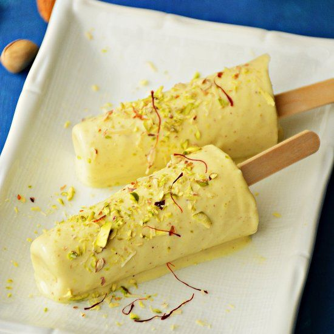
This traditional Indian ice cream is made by slowly heating sweetened milk until the sugar caramelizes and the milk condenses; the mixture is then frozen in cone-shaped molds without first being whipped or churned. As a result, kulfi is denser and creamier than American ice cream, with a custard-like quality that lends itself well to being served on a stick. Kulfi is frequently flavored with aromatics like cardamom, rose or saffron and popular flavors include mango and pistachio.
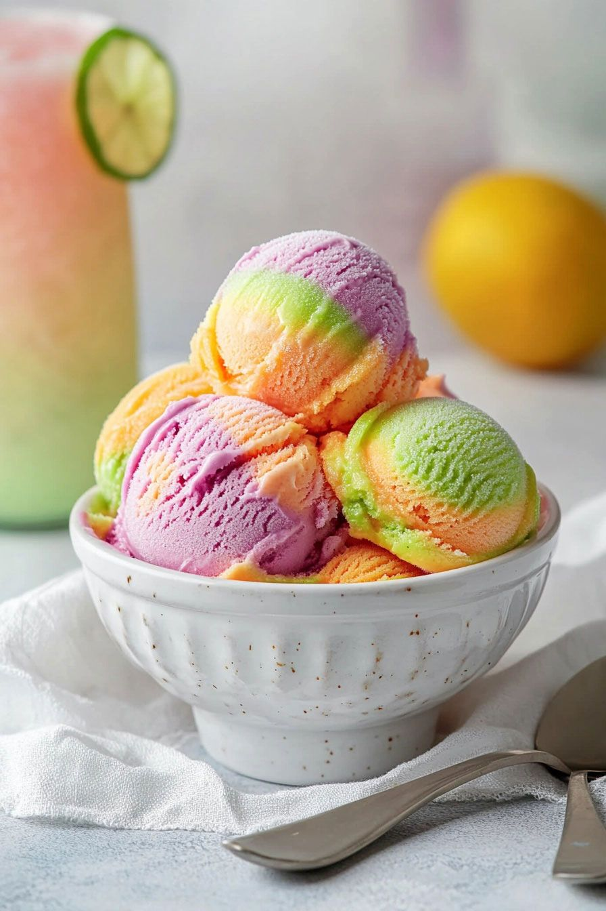
Sherbet is a frozen treat made from fruit purée, plus a scant amount of dairy. Indeed, although sherbet is always made with some form of dairy—be it milk, cream or even buttermilk—the resulting dessert is distinct from ice cream in that it contains only 1 to 2 percent milkfat, as compared to the 10 percent milkfat found in the latter. As such, sherbet is only slightly creamy and considerably lighter than good old fashioned ice cream.
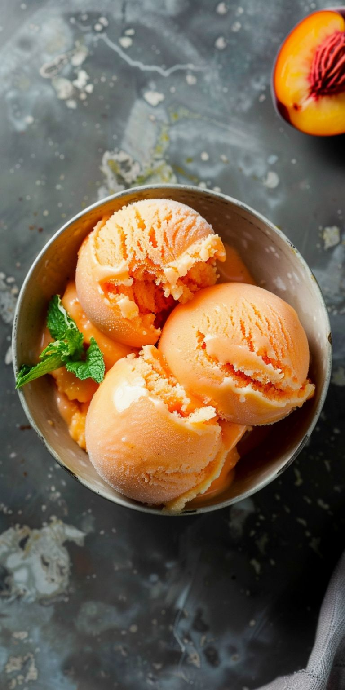
In contrast to sherbet, sorbet is a fruit-forward frozen treat with no dairy whatsoever. In fact, sorbet traditionally consists of only two ingredients—fruit puree and sugar—that are then churned and frozen in the same manner as ice cream. The absence of dairy accounts for the rough and flaky texture of sorbet, as well as the fact that it's served not only as a dessert, but also as a palate cleanser between courses.
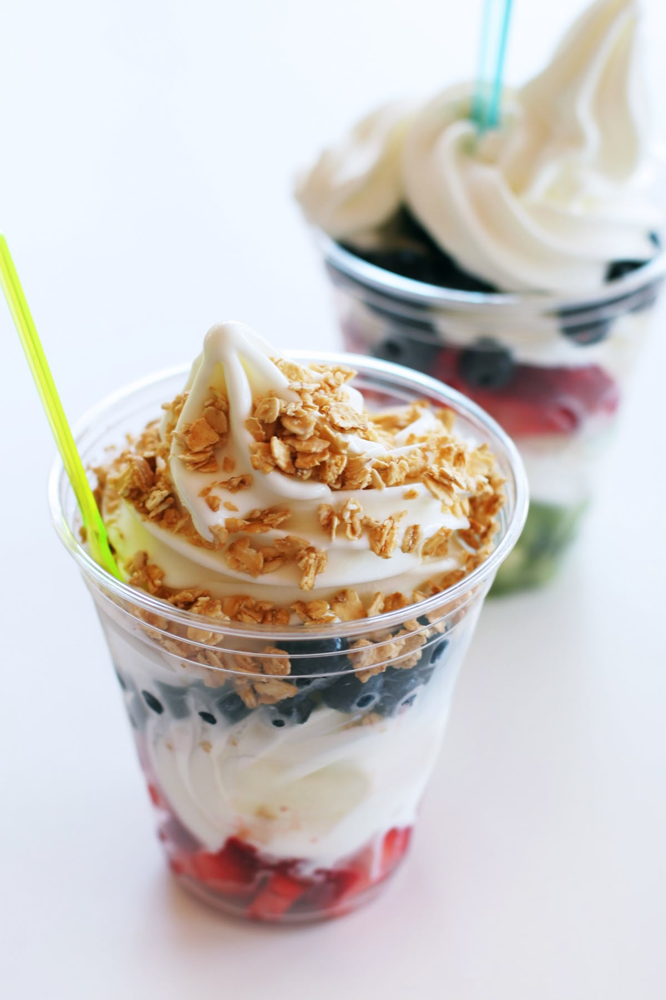
Sweet and mildly tangy, frozen yogurt is a relatively low-calorie soft serve-style dessert that consists of sweetened yogurt, along with other dairy or non-dairy ingredients. Although the fad has since died down, fro-yo remains a very popular dessert that can be found in a wide range of flavors, sprinkled with whatever your sweet tooth craves.
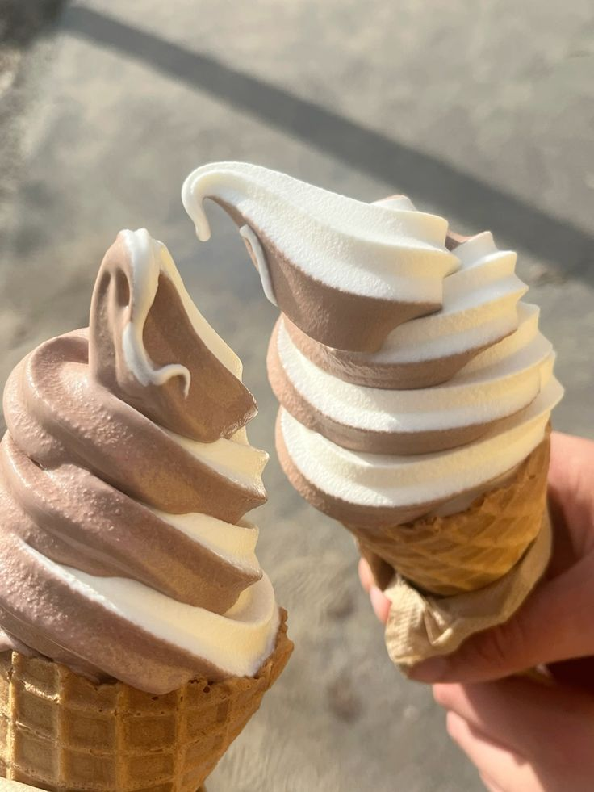
You won't find this one in the frozen foods section of the grocery store, but wherever there's a fair, carnival or ice cream truck, you'll find folks lining up for soft serve. This type of ice cream is a rapidly churned blend of milk and sugar (no eggs) with a light and airy texture, perfect for swirling into a cone or cup—just be sure to make short work of it, because it will melt faster than ice cream.
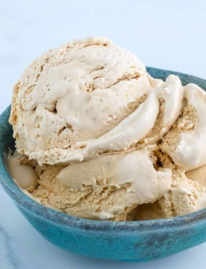
As the name suggests, this type of ice cream hails from the City of Brotherly Love. Philadelphia ice cream is made without eggs for an end result that's lighter and quicker to make than its traditional custardy counterpart, but every bit as flavorful. The lack of eggs results in a velvety, airy texture that really lets the flavors shine.
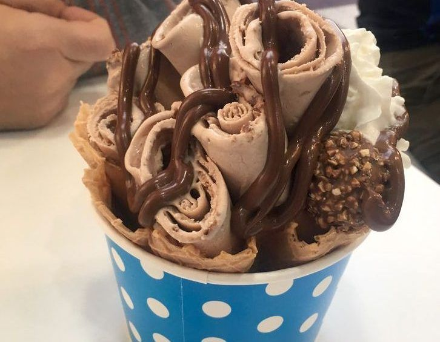
This type of ice cream hails from Thailand and is a popular street food throughout Southeast Asia. Here, the standard ingredients (milk, cream, sugar) are heated, aerated and rapidly cooled to produce Swiss roll-style ribbons of ice cream that can be served upright in a cup and finished with a wide variety of toppings. The process is fascinating to watch and the finished product tastes as good as it looks.
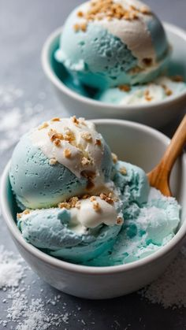
Head to Taiwan to indulge in this pillowy mountain of creamy deliciousness—a pile of fluffy and delicate strips of ice cream, shaved off a massive block of the stuff. The most popular toppings, which include sweetened condensed milk, fresh fruit and chocolate, are just the icing on the snow cream cake.
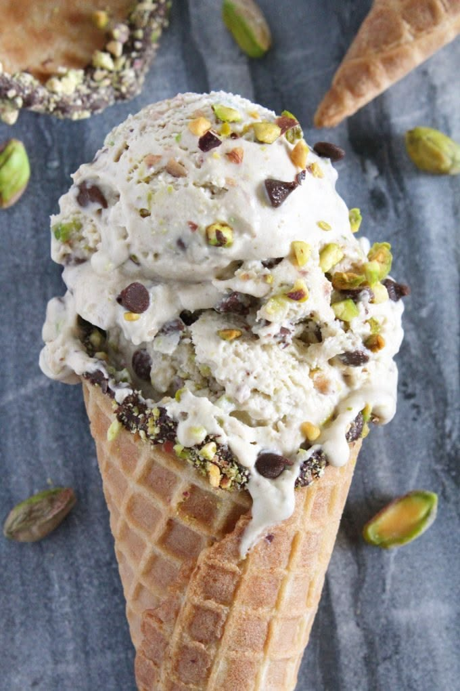
Derived from the Sicilian granita, this style of frozen dessert is dairy-free and has a lot in common with sorbet in terms of its ingredients and the way in which it is made. There is a slight difference in texture, however; Italian ice is, well, icier, while sorbet has a smoother mouthfeel. Bonus: Although fruit flavors are the most common options, chocolate Italian ice is indeed a thing.
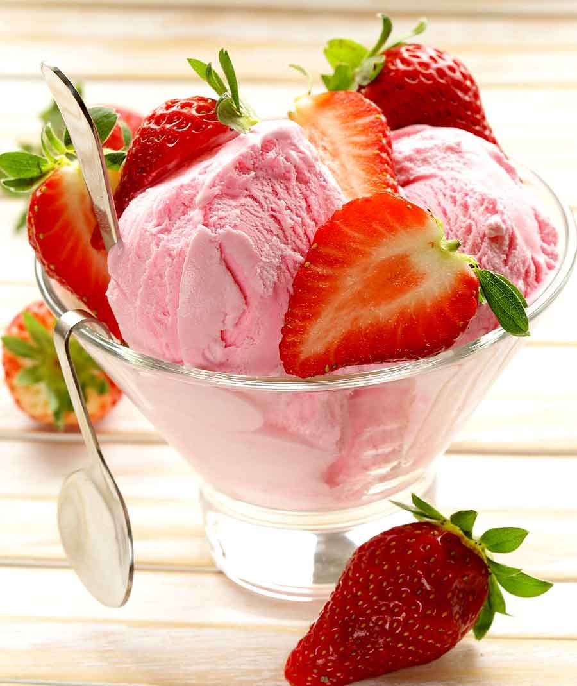
Divinely creamy and dense enough you could eat it with a fork and knife, this Turkish treat is unlike any kind of ice cream you've ever tasted. Mastic—an edible organic glue made from the resin of the mastic tree—is the secret ingredient responsible for the elastic, taffy-like consistency of dondurma. This frozen dessert also comes in a wide variety of flavors…if you're lucky enough to come across it, that is.
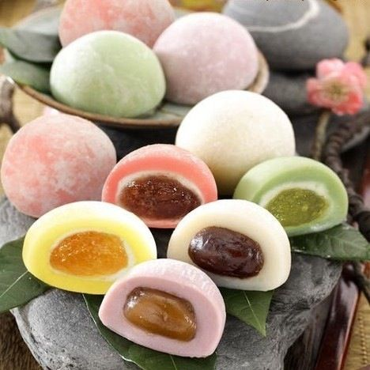
Japan, the last stop on our global ice cream tour, is the country responsible for these cuties—petite rice cakes made with mochi dough and filled with frozen, creamy goodness. It's like an ice cream sandwich, but with a satisfyingly chewy texture and decidedly more visual appeal.